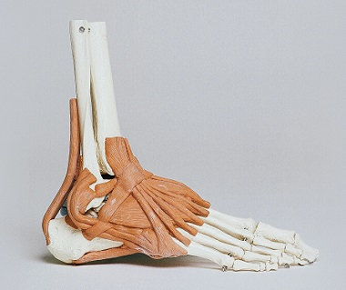

Centro Rakis
Microcentro / CABA.
Ofrece desde un primer encuentro, una solución integral a la patología. Comenzando por un diagnóstico preciso para focalizar en el correcto tratamiento. Apuntamos a lograr una recuperación global y total.
Lic. Ramiro Ghizzoni - Director.
Centro Arkit
Belgrano / CABA.
Pionero en el estudio de la marcha y análisis de la pisada, realizando evaluaciones y dando diagnósticos precisos para la posterior producción de las plantillas ortopédicas correspondientes.
Lic. Jorge Castillo - Director.
